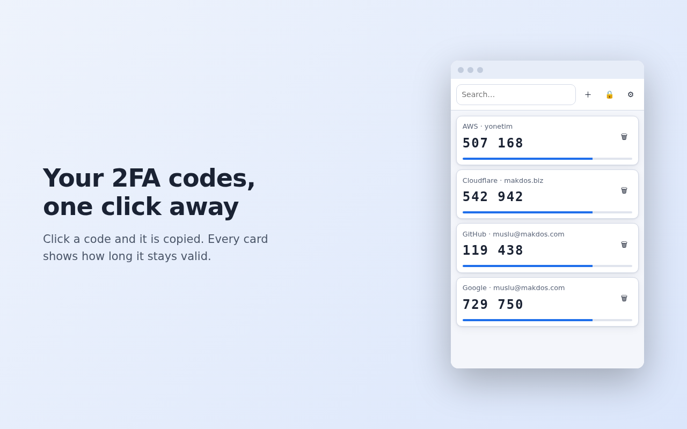

Two-factor authentication codes in your browser. No account, no server, no network permission — your secrets never leave your device.


otpauth:// linkotpauth:// list export (.txt) — compatible with other authenticator appsNot on the Chrome Web Store yet. To run it now:
exte-*-paylas.zip from Releases) and unzip itchrome://extensionsexte folderOn your phone: Google Authenticator → ⋮ → Transfer accounts → Export accounts, select the accounts, and a QR code appears. Get that QR onto your computer as an image (a screenshot, or a photo taken with another camera — both work).
Then: extension icon → ⚙ → Import from Google Authenticator → Choose QR image…
With many accounts Google splits the export into several QR codes. exte tells you which part it
just read (part 1 of 3) so you can load the rest.
If you lose your browser profile without a backup, or forget the password you set on first run, your accounts cannot be recovered — there is no reset path, by design.
⚙ → Export → enter a password → Download encrypted JSON. Keep the file somewhere safe.
The .txt export is not encrypted — it contains your secret keys in plain text. Use it only
to move accounts into another app, then delete it.
The extension declares no host_permissions and contains no network calls, so it cannot send
your data anywhere even if it wanted to. Full policy: PRIVACY.md.
Permissions requested:
| Permission | Why |
|---|---|
storage |
Keeps your accounts and settings on your device |
activeTab |
Only when you click "Scan from screen", to read the QR code from the visible tab |
clipboardWrite |
Copies the code you click to your clipboard |
The TOTP/HOTP engine is checked against the official test vectors from RFC 4226 Appendix D and RFC 6238 Appendix B (SHA-1, SHA-256 and SHA-512). The QR path, the Google Authenticator protobuf decoder, the encrypted backup round-trip and the password flow (setup, unlock, change, re-lock) all have tests too.
node --test tests/ # 29 tests, no dependencies to install
No build step, no npm, no bundler — the folder you clone is the extension that runs. See DEVELOPMENT.md for the architecture, the deliberate design decisions and the pitfalls worth knowing before changing anything.